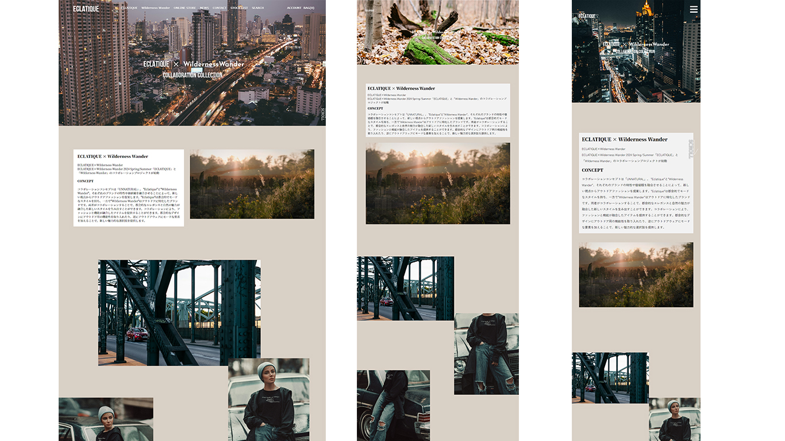
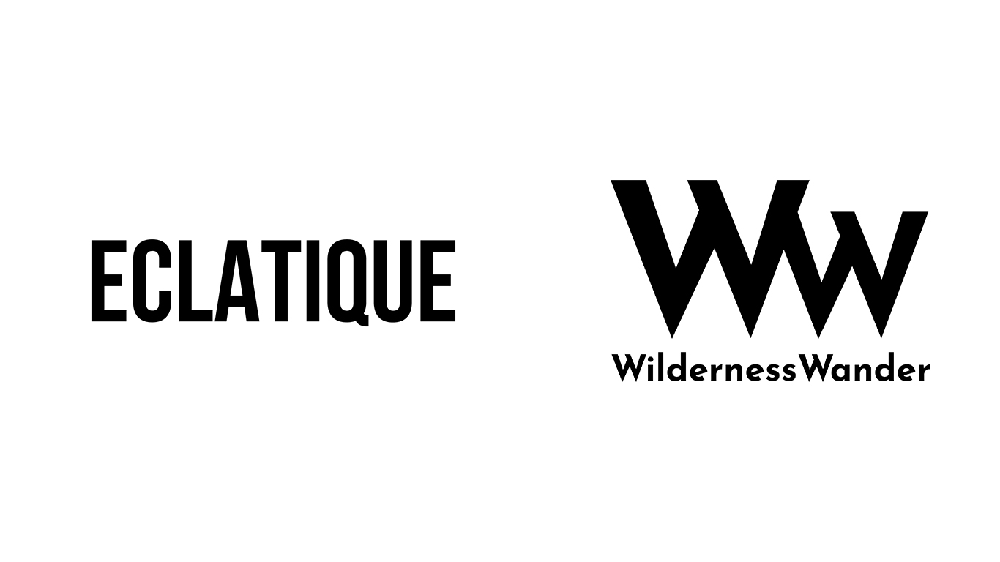
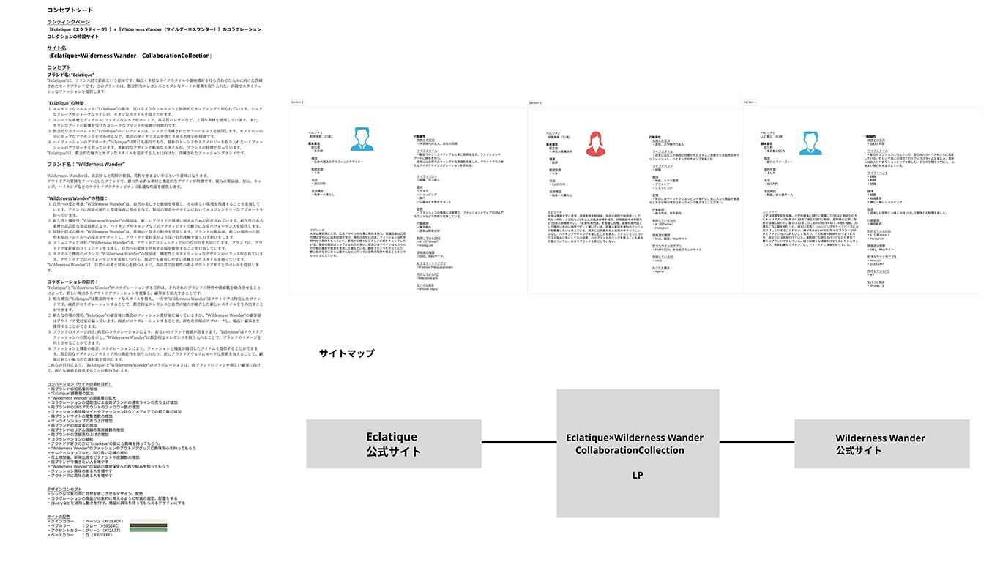
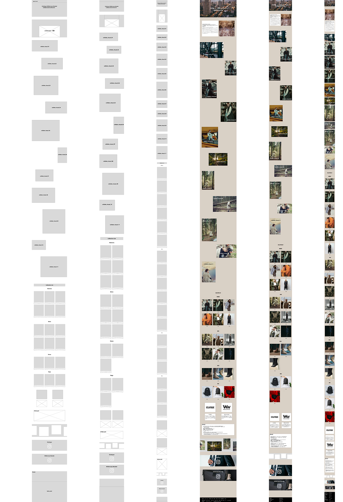

2つの架空のファッションブランドのコラボレーションコレクションのLPを制作。コンセプト、ペルソナ設定、デザイン、ライティング、コーディングまでの一連の作業をすべて担当しました。ブランドイメージの認知と新製品の購入をサイトの目的とし、たくさんの動きをつけてサイトの来訪者の目を引くサイトを制作しました。
URL
https://masudakoki.github.io/portfolio/three/index.html
サイトの目的
・両ブランドの知名度の上昇、"Eclatique"顧客層の拡大
ターゲット
20代後半から30代の年収800万～1000万程度のモードなファッションを好む女性
デザインについて
シックな印象の中に自然を感じさせるデザイン、配色としました。
コラボレーションの商品が印象的に見えるように写真の選定、配置にしています。
複数のjQueryなどを活用し動きを付け、商品写真に目を引くようにしています。
サイトの目的を2つのブランドの認知拡大としており、ファーストビューや両ブランドの説明部分にてブランドロゴを置くことにより両ブランドがユーザーの印象に残ることを狙いにしています。

ロゴについて
ECLATIQUE（エクラティーク）はハイブランド、ラグジュアリーブランドで使用されているフォントに似た「Bebas
Neue」のフォントを使用して、ロゴからも高級感や高品質な印象を視覚的にも認識してもらえるようなデザインにしました。
Wilderness Wander（ワイルドネスワンダー）は、直訳すると荒野の放浪という意味になります。
アウトドアブランドであることがロゴでも認識できるようにWWがオフロードのように荒い道や山に見えるようにデザインしました。フォントは「Reem Kufi」を使用して作成しました。
コーディングについて
複数のjQueryを使用しているため、読み込みに時間がかかるところを裏手にとりサイトを開いた際にローディング画面にてファビコンでも使用している両ブランドのコラボレーションロゴを大きく出しアニメーションでページが開くようにしました。
ユーザービリティを上げるため、マウスポインターのホバー時にグローバルナビゲーションにアニメーションで下線をつけたり、Collection
Listの商品写真がクリックできることを認識できるように写真が拡大するように動きをつけました。
余白を均等にし、商品がディスプレイされているようなデザインにするためにgridを使用し、スマホ版でも崩れないレイアウトにしています。
担当
コンセプト立案（3時間）、ペルソナ設定（2時間）、サイトマップ制作（0.5時間）、ワイヤーフレーム制作（15時間）、写真素材の選定（3時間）、デザイン・コーディング（11時間）、ロゴ（2ブランド分）・ファビコン制作（2時間）
使用ソフト
Figma、Photoshop、Illustrator、Visual Studio Code
figmaコンセプトシート
コンセプト、ペルソナをfigmaを使用しまとめました。コンセプトを作りこむことでデザインの軸がぶれないようにしています。

figmaデザインカンプ
コンセプト立案・ペルソナ設定後、figmaを使用してワイヤーフレームを制作しました。オートレイアウト機能を活用し、レスポンシブ対応可能なデザインにしました。
[figma ワイヤーフレーム、デザインカンプ]
